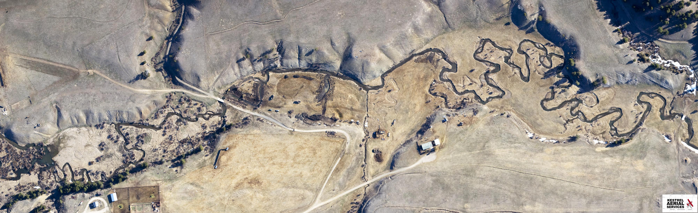

                    <!-- modal Head start -->
                    <div class="modal_head">
                        <button aria-label="Close" data-dismiss="modal" class="close" type="button" style="cursor: pointer!important"><i class="fa fa-3x fa-times" aria-hidden="true"></i>
                        </button>
                    </div>
                    <!-- modal body start -->
                    <div class="modal_body">
                        <div class="container">
                            <!-- Service Details Content Area -->
                            <div class="service_details_content section_heading">
                                <h3 class="text-left otherfont">River Restoration</h3>
                                <hr class="card-hr">
                            </div>
                                <!-- Service Details Thumb -->
                                <!-- Service Details Text Area -->

                                <div id="carousel-0" class="carousel slide" data-ride="carousel">
                                  <ol class="carousel-indicators">
                                    <li data-target="#carousel-0" data-slide-to="0" class="active"></li>
                                    <li data-target="#carousel-0" data-slide-to="1"></li>
                                  </ol>
                                  <div class="carousel-inner">
                                    <div class="carousel-item active">
                                      
                                      <div class="carousel-caption d-none d-md-block">
                                        <h5 style="color:#fff;">River Why</h5>
                                        <p style="color:#fff;">Before</p>
                                      </div>
                                    </div>
                                    <div class="carousel-item">
                                      
                                      <div class="carousel-caption d-none d-md-block">
                                        <h5 style="color:#fff;">River Why</h5>
                                        <p style="color:#fff;">After</p>
                                      </div>
                                    </div>
                                  </div>
                                  <a class="carousel-control-prev" href="#carousel-0" role="button" data-slide="prev">
                                    <span class="carousel-control-prev-icon" aria-hidden="true"></span>
                                    <span class="sr-only">Previous</span>
                                  </a>
                                  <a class="carousel-control-next" href="#carousel-0" role="button" data-slide="next">
                                    <span class="carousel-control-next-icon" aria-hidden="true"></span>
                                    <span class="sr-only">Next</span>
                                  </a>
                                </div>

                            <!-- <div class="justify-content-center">
                                <div class="single_part_content">
                                    <p>According to the U.S. EPA over 55% of U.S. waterways are in poor health. They provide insufficient habitat for wildlife, fail to adequately cleanse water, and
                                    magnify the impacts of floods due to human alterations. We restore rivers to
                                    improve and provide greater habitat for fish and other wildlife species. Our restoration
                                    efforts result in lower water temperature, cleaner water, slower moving water (minimizing the impacts of floods), and recharge the aquifer. We have restored roughly 50 miles of creeks and rivers to date.</p>
                                    <br>
                                </div>
                                <div>
                                    <h5 class="p-special otherfont">Before</h5>
                                    
                                </div>
                                <div class="text-center">
                                <i class="text-center fa fa-5x fa-long-arrow-down"></i>
                                </div>
                                <div>
                                    
                                    <h5 class="p-special otherfont">After</h5>
                                </div> -->
                                <div class="row justify-content-center">
                                <button aria-label="Close" data-dismiss="modal" type="button" class="btn btn-primary otherfont close-button" style="cursor: pointer!important">CLOSE</button>
                                </div>
                            </div>
                        </div>
                    </div> 